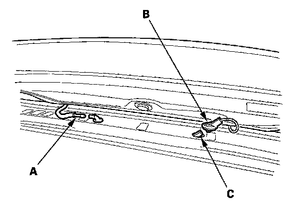
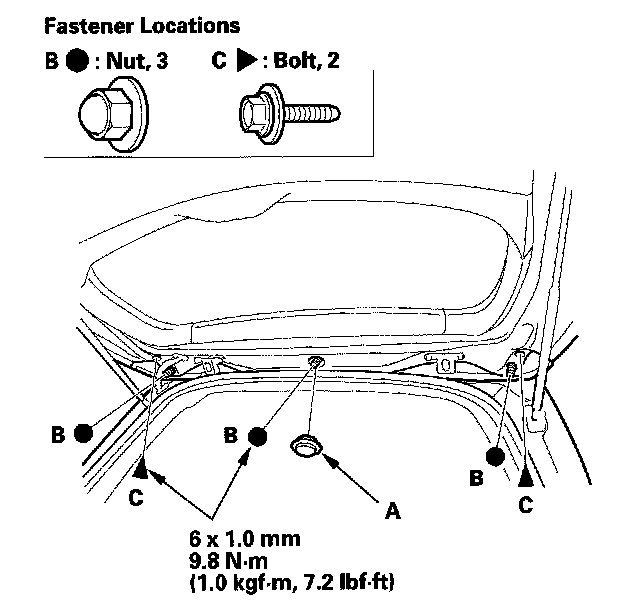
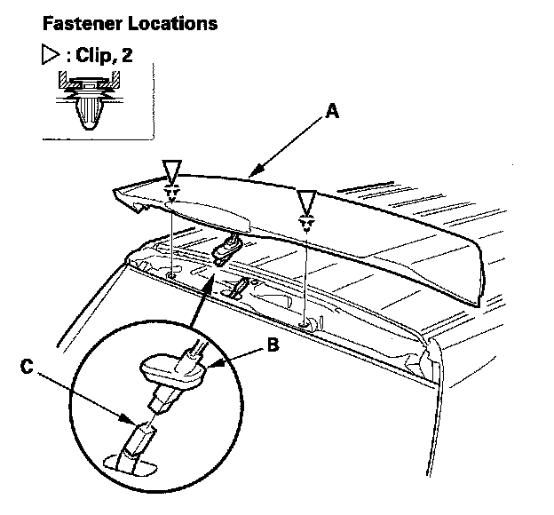

Spoilers, Flaps, and Air Dams: Service and Repair
Tailgate Spoiler Trim ReplacementNOTE: Take care not to scratch the tailgate and body.

1. Open the tailgate. Disconnect the rear window washer tube (A). Remove the radio antenna connector grommet (B) from the tailgate, and disconnect the radio antenna connector (C).

2. Remove the access cap (A) from the tailgate, and remove the nuts (B) and bolts (C) securing the tailgate spoiler trim.

3. Gently close the tailgate, and lift up on the tailgate spoiler trim (A) to detach the clips.
4. Remove the high mount brake light connector grommet (B) from the tailgate, and disconnect the high mount brake light connector (C), then remove the tailgate spoiler trim.
5. Install the trim in the reverse order of removal, and note these items:
- Make sure the radio antenna connector and high mount brake light connector are plugged in properly and the rear window washer tube is connected properly.
- Make sure the radio antenna connector grommet and high mount brake light connector grommet are installed securely.
- If the clips are damaged or stress-whitened, replace them with new ones.
- Push the clips into place securely.